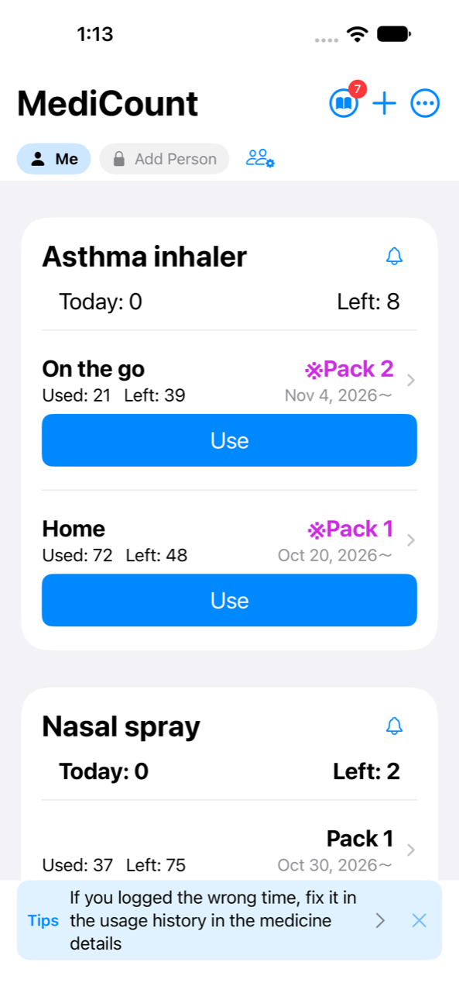
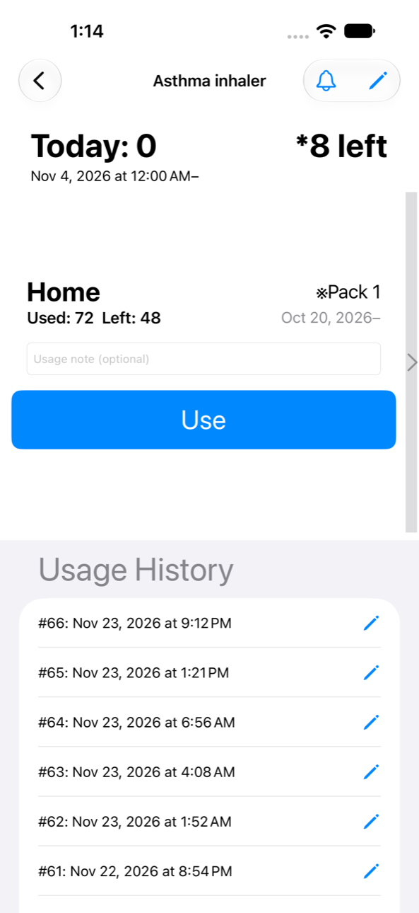

MediCount
Track the doses left in inhalers and nasal sprays
Count doses and check what’s left—for hay fever, allergies, asthma, and more

Track the doses left in inhalers and nasal sprays
Count doses and check what’s left—for hay fever, allergies, asthma, and more
November 2026 — Version 3.02.00: Added free backup and iPad support.
An app for easily tracking the doses left in medicines that don’t show how much remains—like asthma inhalers and nasal sprays for hay fever and allergies. Log each dose with a counter and see what’s left at a glance.
What it does: Enter a medicine’s total doses and how many you’ve used, and it shows the remaining count in real time.
Why it helps: Always know how many doses you have left, so you never worry about running out.
What it does: Just tap the “Use” button to log a dose. Your history is saved automatically.
Why it helps: Simple to use, so you don’t miss a dose—and your count stays accurate.
What it does: Add several packs of the same medicine (e.g., Pack 1, Pack 2) and track each one’s remaining doses and history separately.
Why it helps: Stay organized and see at a glance how much is left in each.
What it does: Record the date, time, and a note for each dose, and edit or delete them as needed.
Why it helps: Look back on past doses—helpful when talking with your doctor or adjusting your treatment plan.
What it does: Medicines in use and finished ones are shown separately, in a simple, easy-to-read design.
Why it helps: Anyone can use it, making daily tracking stress-free.
What it does: Export your records to a file and import them later. Exported files are encrypted.
Why it helps: Bring your records along when you get a new phone or use both an iPhone and an iPad. You can also merge records from another device.
What it does: Works on iPad too, with a layout made for the larger screen.
Why it helps: Check your records on a family iPad or on a bigger screen at home.
Version 4.00.00 adds the following features. All existing features remain free.
What it does: Get a notification at set times every day, for each medicine. You won’t be notified if you’ve already logged that dose.
Why it helps: Helps you avoid missed doses—and stop wondering whether you’ve already taken one.
What it does: Put the medicines in your list in any order you like.
Why it helps: Keep the ones you use most at the top for quick logging.
What it does: Learn each feature by trying it on the app’s real screens. Nothing you do in practice is saved, so your real records stay the same.
Why it helps: Get started without confusion, even on day one. It also lets you know when new features become available.
What it does: Manage medicines for up to 5 people, including you, kept separate for each person. Tap a name at the top of the screen to switch. Buy once, use forever.
Why it helps: Check what’s left in your kids’ and family’s inhalers and nasal sprays, all in one app.
* This feature manages your family’s medicines within this app. It does not support Apple Family Sharing.
What it does: Includes a run-out forecast, alerts when you’re running low (low-count alerts), Home Screen widgets, reports to show your doctor, and custom icons and themes. Buy once, use forever.
Why it helps: Notice before you run out, and show your usage log as is at doctor visits.
What it does: Includes both Family and Pro.
Why it helps: Use Pro features with everyone’s medicines in your family.

